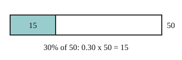

Part of Percent Change. Answer in the chat (1: ..., g: c), add sure or guess after any answer, and say done when finished.
Last time: what is 30% of 50? You said a) 20. It is b) 15.

You often need a part of an amount, like a tip or a discount. Percent means per hundred, so 30% is 0.30 (notes 1). To take a percent of a number, multiply by that decimal (notes 2).
Q1. What is 20% of 85?
17 (sure)
Right: 0.20 x 85 = 17 (notes 2).
Q2. Why is 5% of 60 the same as 60% of 5?
both are 0.05 x 60 and 0.6 x 5, which are both 3, the order you multiply in does not matter
Right: each is 5 x 60 / 100 (notes 2).
Q3. Sam says 150% of 40 is impossible, since you cannot have more than all of something. What is wrong?
150% is just 1.5 x 40 = 60, a percent can go over 100 (sure)
Right: 150 per hundred is 1.5 (notes 1).
You can now find any percent of a number.
A price goes from 80 to 100. By what percent did it rise?
a (guess)